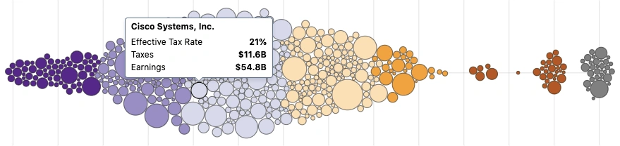

A set of interactive data visualisations
Recreated a few older charts in the latest version of d3.js. Some of these are also interactive versions of existing static charts.
Horizontal packed bubble
A force simulation with two modes, combined and split. Also uses Voronoi to implement a layer to improve interaction.

Calendar
A calendar-like grid of stacked bar charts with a legend that allows for toggling of different parts of the stack.

Mace
A bubble chart with an additional direction dimension denoted by the orientation of a custom shape made specifically for this chart.